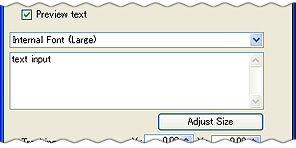
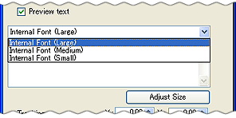
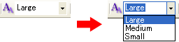

配置済みのテキストオブジェクトのフォントを変更できます。
尚、本体の仕向け先に応じて使用できるフォントが限られますのでご注意ください。
| DSi本体の仕向け先 | 使用できるフォント |
| 日本、北米、欧州、豪州 | 本体内蔵フォント大 本体内蔵フォント中 本体内蔵フォント小 |
| 中国 | 中国版：本体内蔵フォント大 中国版：本体内蔵フォント中 中国版：本体内蔵フォント小 |
| 韓国 | 韓国版：本体内蔵フォント大 韓国版：本体内蔵フォント中 韓国版：本体内蔵フォント小 |
注意）Editor上では各国版のフォントを混ぜて表示できますが、本体に内蔵されていないフォントは実機上では正しく表示できません。
配置済みのテキストオブジェクトをダブルクリックして、テキストオブジェクトのオブジェクト編集ウィンドウを開きます。
テキスト入力エリアの上にフォントタイプ選択プルダウンがあります。

フォント選択のプルダウンから任意のフォントを選択します。

テキストオブジェクトを選択時に表示されるツールバーでも、フォントを変更できます。
文字を変更したいテキストオブジェクトを選択します。
ツールバーのフォント変更プルダウンから、使用するフォントを選択します。
